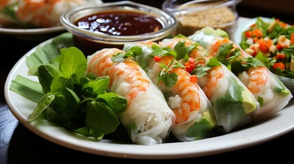

Summer Rolls

Description
If you’re looking for the perfect light appetizer or summer lunch, then turn to these homemade summer rolls. For my recipe, I rolled gently poached shrimp, springy rice noodles, crunchy vegetables, and fresh green herbs into al dente rice paper sheets. Paired with an easy peanut dipping sauce, these summer rolls are the refreshing (and versatile!) dish I turn to again and again when I need something quick, easy, and oh so satisfying. Skip going out—make these summer rolls right at home instead.
Ingredients
- 3 oz. rice vermicelli noodles
- 12 large shrimp. peeled and deveined
- 1 large carrot, julienned
- 2 Persian cucumbers, julienned
- 8 oz. Napa cabbage, thinly sliced
- 1 Tbsp. fish sauce
- 1 Tbsp. dark brown sugar
- 1/4 c. rice vinegar
- 8 large rice paper sheets
- 2 Tbsp. black sesame seeds
- 12 fresh mint leaves
- 12 fresh basil leaves
Steps
-
Place noodles in medium heatproof bowl, cover with boiling water; let stand about 5 minutes or until just tender, drain. Using kitchen scissors, cut noodles into random lengths.
-
Meanwhile, poach shrimp in salted boiling water until they just become pink and opaque. Rinse under cold water, then slice in half lengthwise.
-
In a medium bowl, mix together noodles, carrot, cucumber, cabbage, fish sauce, sugar, and vinegar.
-
To assemble rolls, place a sheet of rice paper in medium bowl of warm water until just softened. Lift sheet carefully from water, placing it on a tea-towel-covered board. Place some of the vegetable filling horizontally in the center of the sheet and top with one mint leaf, one basil leaf, 3 shrimp halves, and sesame seeds. Fold edge closest to you up and over the filling; roll sheet to enclose filling, folding in sides after first complete turn of roll.
-
Repeat with remaining sheets and filling.